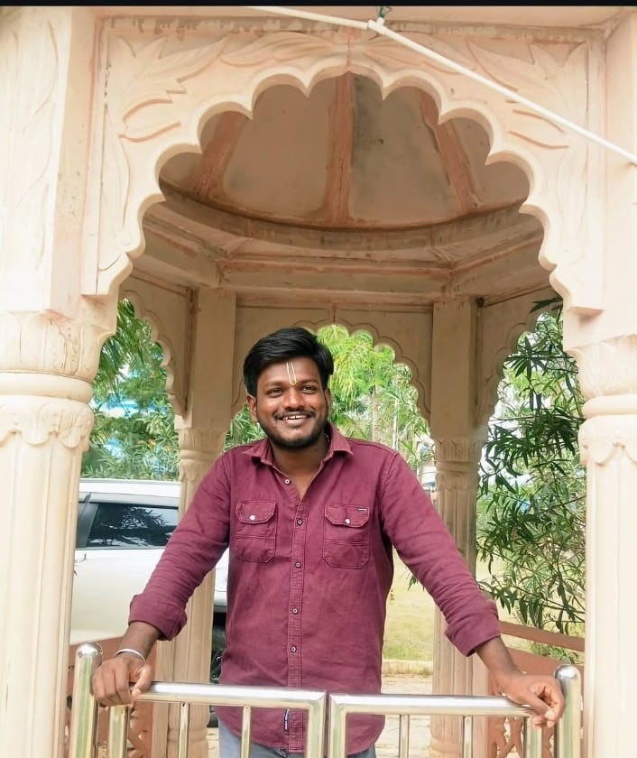

Final Year Computer Science (AI) Student aspiring to build scalable and meaningful software solutions.
 Download ResumeI am a final year Computer Science (AI) student focused on strengthening my foundation in frontend development and cloud technologies. I continuously work on improving my problem-solving skills and technical knowledge. Alongside development, I practice cinematic reel editing as a creative discipline.